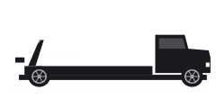

Servizio ed emergenza
F-Series carro attrezzi
F-Series carro attrezzi in GTA VI: servizio ed emergenza. Ispirazione: Ford F-Series, configurazione carro attrezzi. Visto in un media ufficiale, senza nome comunicato.
Illustrazione provvisoria: le immagini ufficiali devono ancora essere aggiunte a questa scheda.
Cosa c’è da sapere
Un carro attrezzi costruito su base Ford F-Series, con braccio idraulico e verricello a vista sul retro. Per ora Rockstar non gli ha dato né un nome nel gioco né un costruttore fittizio. L’Extended Look lo mostra in pieno intervento, con un veicolo incidentato attaccato al cavo.
Cosa dice la scheda
L’F-Series carro attrezzi è un veicolo della categoria servizio ed emergenza censito su Leonidakit. Avvistato ufficialmente, nome dedotto: questa scheda tiene il nome più probabile e lo cambierà appena Rockstar ne pubblicherà uno. Compare in An Extended Look, la lunga sequenza di presentazione pubblicata da Rockstar. Il suo modello reale è americano, e si sposa bene con l’atmosfera di uno Stato ispirato alla Florida.
I numeri arrivano il 19 novembre 2026: prezzo, velocità massima, accelerazione, capienza e punti vendita, rilevati nel gioco.
Il modello reale
L’accostamento scelto per questo veicolo: il Ford F-Series, configurazione carro attrezzi. Prendilo per quello che è: una lettura delle immagini diffuse. Rockstar non ha mai commentato i modelli da cui parte.
Nella serie, questo tipo di veicolo
I veicoli di servizio della serie appartengono alla città: polizia, soccorsi, trasporto pubblico, manutenzione. Non si comprano: li incroci e, a volte, li prendi in prestito.
Identità
| Modello | F-Series carro attrezzi |
|---|---|
| Costruttore | Marca sconosciuta |
| Stato | Visto in un media ufficiale |
| Categoria | Servizio ed emergenza |
| Ispirazione reale | Ford F-Series, configurazione carro attrezzi (accostamento della community) |
| Origine del modello | Modello americano |
| Fonte | Extended Look |
Scheda informativa
Quello che non è ancora pubblicato mantiene il suo stato: niente è inventato, e i costi d’uso non sono meccaniche confermate.
Come si ottiene
- Prezzo
- Prezzo in arrivo
- Acquistabile
- Acquisto da confermare
- Come si ottiene
- Ottenimento da confermare
- Dove trovarlo
- Posizione in arrivo
Prestazioni
- Accelerazione
- Da confermare
- Velocità massima
- Da confermareUna velocità massima non è una velocità di percorrenza.
- Frenata
- Da confermare
- Tenuta di strada
- Da confermare
Capacità
- Posti
- Da confermare
- Terreno
- stradaStimatoDedotto dal tipo di veicolo (categoria del sito), non da una scheda tecnica.
- Carico
- Da confermare
Costi d’uso
- Carburante
- Carburante: meccanica non confermataUn indicatore visto in un trailer non prova né un prezzo, né un consumo, né un costo d’uso.
- Manutenzione
- Manutenzione: meccanica non confermataPer GTA VI non è stato annunciato nessun costo di manutenzione dei veicoli.
- Riparazioni
- Riparazioni: meccanica non confermataLe riparazioni a pagamento di GTA V non provano niente per GTA VI.
- Assicurazione
- Assicurazione: meccanica non confermataPer GTA VI non è stata annunciata nessuna assicurazione dei veicoli.
- Rivendita
- Rivendita: meccanica non confermataUna rivendita conta solo se è possibile e se il suo prezzo è noto o scelto come ipotesi. Non riduce mai i soldi da pagare oggi.
Sulla mappa di Leonida
Non è stato individuato nessun luogo d’acquisto per i veicoli di servizio, e niente dice che si possano comprare.


Servizio ed emergenza
F-Series carro attrezzi
Dove trovarlo: Posizione in arrivo
Veicolo di servizio: nessun luogo d’acquisto individuato, e niente dice che si possa comprare.
Un errore in questa scheda? Ogni modello reale citato è una deduzione tratta dalle immagini ufficiali. Lo studio non conferma niente, e non usiamo nessun contenuto rubato. Se hai una correzione, la pagina Contatti serve a questo.